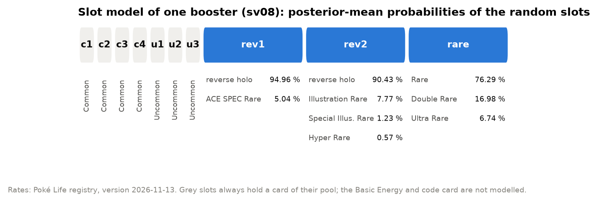
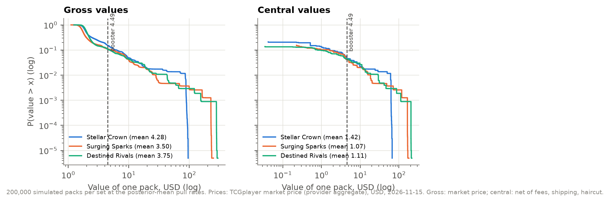
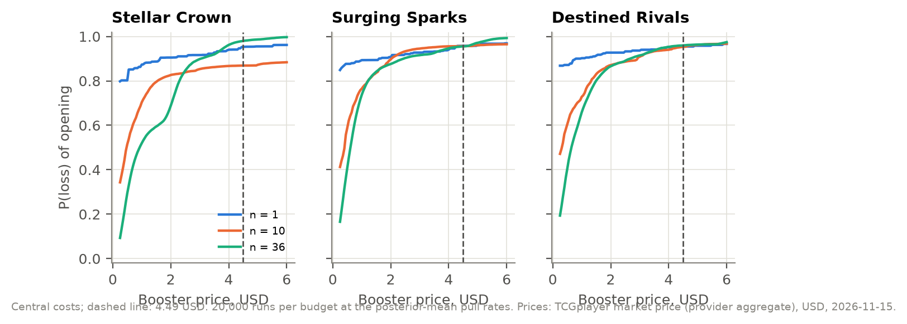
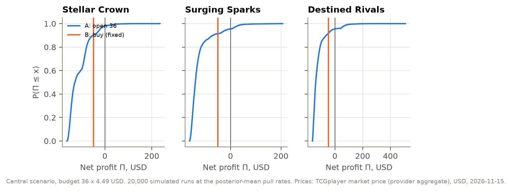
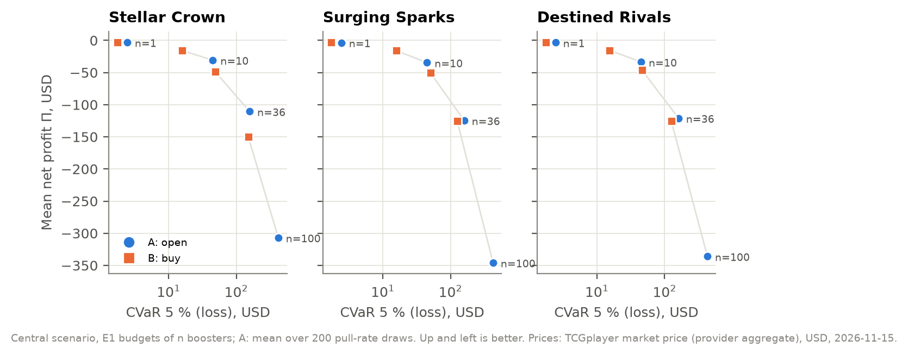

Anh-Vu TA · Working paper, November 2026 · Code, data and configurations: https://github.com/Azekf11/PokeQuant, DOI 10.5281/zenodo.24251050
Is opening Pokémon Trading Card Game booster packs a competitive way to acquire cards, compared with buying them directly on the secondary market? We model three recent English sets (Stellar Crown, Surging Sparks and Destined Rivals) slot by slot. Rarity rates come from community openings, with Dirichlet posteriors, and a nested Monte Carlo propagates their uncertainty (200 posterior draws × 20,000 runs). Cards are valued at TCGplayer market prices in USD on 2026-11-15, converted into net realisable values under three cost scenarios. Hypotheses, metrics, decision rules and robustness tests were pre-registered before any result existed.
Under the central scenario, opening loses money on average for every set and budget. The break-even booster price is 1.03 to 1.42 USD against a retail price of 4.49 USD, and 3.44 to 4.29 USD without any fee, shipping or haircut. Opening 36 boosters loses 111 to 125 USD on average. Buying cards directly also loses money through round-trip costs, but less than half as much, and it is decisively better on the mean, the median and the 5 % conditional value-at-risk in 35 of 36 budget comparisons. Opening until a set's most valuable card appears is cheaper than buying it in only 4 % to 14 % of simulated runs. Opening's average loss and the advantage of buying hold in all sixteen pre-registered robustness variants. Liquidation assumptions change the size of the gap; pull-rate assumptions barely do. Code, configurations, the pull-rate snapshot and all derived results are public, and one command regenerates every table and figure.
Keywords: trading card games, loot boxes, Monte Carlo simulation, Bayesian uncertainty, conditional value-at-risk, pre-registration, reproducibility.
A Pokémon Trading Card Game booster pack is a lottery over cards. Each English pack holds ten game cards, plus a Basic Energy and a code card. Most cards are worth less than the cost of selling them, and a small number of rare printings trade for tens or hundreds of dollars. A collector who wants those cards has two routes:
Online guides and calculators answer this question with an expected value: the sum over cards of price × pull rate, compared with the price of a pack. That number hides four things:
This paper asks, for three recent English sets: to what extent is opening boosters an economically competitive way to acquire cards, compared with buying them directly, once pull-rate uncertainty, value dispersion, fees and liquidity are taken into account? We answer with two estimands, fixed before any price was analysed:
Method. We model a booster slot by slot. Rarity rates follow Dirichlet posteriors estimated from community openings, and we propagate their uncertainty through a nested Monte Carlo: 200 posterior draws of the rates, each with 20,000 simulated runs. Cards are valued at a dated provider market price, converted into net realisable values under three pre-registered cost scenarios. We report means together with medians, probabilities of loss and the 5 % conditional value-at-risk, each with its Monte Carlo error and its interval over pull-rate uncertainty. Hypotheses, metrics, decision rules, scenarios and robustness tests were registered in two stages, as signed git tags, before the results existed. Every table and figure is regenerated by one command.
Results. Under the central scenario, opening loses money on average for every set and budget:
Robustness. These conclusions survive sixteen pre-registered variants (§7): other price statistics, haircuts up to 0.50, halved or increased selling costs, pull rates at the bounds of their intervals, another prior, the exclusion of the 1 % most valuable cards, and up to 100,000 runs per draw. Opening loses on average and buying is decisively better in every variant. The break-even booster price stays between 0.54 and 1.74 USD. The gross break-even price stays below the retail price in every variant but one, where its upper bound exceeds it.
Contribution. The contribution is not a new expected-value calculator. It is a reproducible and pre-registered framework that combines four elements:
The code, configurations, pull-rate snapshot and every derived result are public. Raw prices are not redistributed, but the scripts that fetch them and the checksums of the snapshot are.
The paper is organised as follows. Section 2 reviews related work. Section 3 describes the data. Section 4 sets out the model and the simulation engine, and Section 5 the pre-registered design. Section 6 reports the results and Section 7 their robustness. Section 8 discusses limits and implications, and Section 9 concludes.
The paper draws on five strands of work. For most of them we cite only what
the published abstract states. The note field of each bibliography entry
records what was read.
The returns on collectibles are well studied, and the strand stresses transaction costs:
Closer to our object, recent work covers sealed products:
These studies ask whether holding a collectible pays. We ask a narrower, earlier question: what does it cost to obtain cards by opening packs rather than buying them?
Price determinants. Academic work on Pokémon cards concerns price determinants, grading and market efficiency:
The hedonic approach goes back to Rosen (1974). Its use for cards includes Mullin and Dunn (2002), who use baseball cards. For a game that sells randomised packs, the most relevant hedonic result is Hughes (2022): in Magic: The Gathering, a card's rarity designation, which is set through pack odds, carries a price premium of its own.
Liquidity. A field study bears directly on our liquidity assumptions. Heck et al. (2026) listed 300 Pokémon cards on eBay for one year:
We use these figures to anchor one robustness scenario (R10). They come from a different sample and platform, and we label them as transferred evidence.
Booster packs belong to the family of randomised products. Several papers model the design and pricing of such products:
A public-health literature links spending on loot boxes and on physical booster packs to problem gambling (Zendle and Cairns 2018; Zendle et al. 2021; Xiao et al. 2025). Odds-disclosure rules are not always followed: Xiao et al. (2023) report poor compliance with the UK industry's self-regulation on loot-box probability disclosure. For the English sets we study, the official product description gives only the number of cards per pack. We therefore estimate pull rates from community openings and treat them as uncertain (§3, §4).
Online guides and calculators already compute the expected value of a pack
from a price snapshot and published odds. Some also simulate the distribution
of a pack's value with fixed odds (S1 review,
research/protocol/literature_review.md). A pack-level Monte Carlo is
therefore not a contribution in itself. Neither is the observation that the
mean of a skewed value distribution exceeds its median.
The closest formal treatment is Mota (2026). According to its abstract, it compares the price of a sealed Magic: The Gathering product with the expected value of its contents if opened and sold. It defines a "sealed-opened spread" with a no-arbitrage condition under perfect-market assumptions. It discusses transaction costs, variance and liquidity, with a generic numerical example. We could not obtain its full text. What follows from its abstract alone is limited:
Risk measures. We report the 5 % conditional value-at-risk (CVaR, or expected shortfall), a coherent risk measure (Artzner et al. 1999). Rockafellar and Uryasev (2000, 2002) study its optimisation and its extension to general loss distributions.
Our simulated profits are discrete, with masses at a few values. For example, a one-pack budget often yields the same loss in many runs. Acerbi and Tasche (2002) show that a suitably defined expected shortfall is coherent for any distribution with a finite mean loss, discrete or not (their Prop. 3.1). They also show that minus the average of the ⌊nα⌋ worst simulated outcomes converges to it (Prop. 4.1). With α = 5 % and 20,000 runs, this is our estimator: 1,000 tail samples.
Pull-rate uncertainty. We separate the uncertainty on the pull rates (epistemic) from the randomness of the packs (aleatory) (Der Kiureghian and Ditlevsen 2009). Rates follow Beta and Dirichlet posteriors under a Jeffreys prior (Jeffreys 1946). Jeffreys intervals perform well for binomial proportions (Brown et al. 2001).
Nested simulation. Gordy and Juneja (2010) study a nested simulation that estimates a risk measure of a conditional expectation. They show that, as the budget grows, the inner sample size should grow only as its cube root, and the number of outer scenarios as its two-thirds power.
Our design answers a different question. We do not estimate a risk measure of the conditional mean. Every metric is computed within one draw of the rates, on 20,000 simulated runs, and the draws only give its posterior interval. Within-draw tail estimates need many inner runs, and the interval needs only enough outer draws for stable 2.5 % and 97.5 % quantiles. Hence our 200 × 20,000 design. Robustness test R7 checks its stability (§7).
To our knowledge, no published study of the Pokémon TCG combines:
This statement rests on the works listed above, most of which we read at abstract level. It should be checked against the full texts of the closest papers.
Pull-rate figures in this section come from the Poké Life registry snapshot dated 2026-11-13 and catalogue figures from TCGdex responses fetched on 2026-11-15; all are reproducible from the committed snapshot and data-audit outputs.
Pull rates. Per-pack rarity rates are taken from the Poké Life pull-rate evidence registry, which aggregates published openings (case breaks, store tallies, streamed box openings and the TCGplayer Authentication Center). We use the immutable dated version 2026-11-13. It contains 234 rarity rows covering 36 English-language sets, and a companion file describing 75 reviewed openings, 53 of which are flagged as qualifying. The registry is published under CC BY 4.0 and is redistributed in the replication package with the required attribution: Poké Life, "Pokémon TCG pull-rate evidence registry," https://www.poke-life.com/data/ (accessed 2026-11-15), CC BY 4.0. Intervals are Beta posteriors under a Jeffreys prior (Jeffreys 1946). Curation is largely automated, with human review of a sample only; the operator is not named and the licence of the underlying openings is not stated. We treat the registry as a documented secondary compilation, not as primary evidence.
Catalogue. Card lists, numbers and rarities come from TCGdex, whose card database is released under the MIT licence. Raw TCGdex responses are not committed, because they embed price fields and image URLs whose rights are unclear; they can be re-fetched by script.
Prices. TCGdex also exposes price fields from two providers: TCGplayer (USD; low, mid and high listing prices and a market price) and Cardmarket (EUR; a low listing price, a trend price and averages). In the typology of the protocol, these are active listings and provider-market aggregates. None is a realised-sale price, and no open source of realised sales was identified. Each value is attached to one printing (normal, reverse or holo) by a fixed rule (ADR 0008); values that cannot be attributed to a single printing are discarded and counted in the ingestion manifest rather than guessed. Both TCGdex and the secondary provider PkmnPrices authorised their use for this non-commercial project (ADR 0009). Prices are labelled by type, never presented as transaction values, and always combined with liquidity-haircut scenarios; only derived statistics are published, never raw prices. Field evidence supports this caution: in a one-year study of 300 Pokémon cards listed on eBay, 73 % sold and posted prices acted as a ceiling on realised prices (Heck et al. 2026). The permission does not extend to the terms of the originating marketplaces, which were not reviewed; this is one more reason not to redistribute raw prices. Attribution: price data from TCGdex (tcgdex.dev), relaying TCGplayer and Cardmarket prices, used with permission. This section uses price coverage only.
The protocol requires one to three sets chosen by a data-coverage audit. The
selection rule (ADR 0005) was committed before the snapshot and the catalogue
were analysed and before any price value was inspected. A set is eligible if
(1) it is an English-language set in the snapshot; (2) it belongs to the
Scarlet & Violet series or later, with a single 10-card booster whose
composition is publicly documented; (3) at least 5,000 packs were measured
(maximum of packs over its rarity rows); (4) every row from Double Rare
upwards has non-missing hits, packs and interval; (5) its TCGdex catalogue is
complete, with a rarity for every card; and (6) at least 90 % of its cards of
rarity Rare and above have at least one price field. Eligible sets are ranked
lexicographically by the share of rows with non-reconstructed counts, the
share of rows with high confidence, packs measured, and release date (older
first). The top three are selected by script.
Of the 36 sets, 15 are eligible. Of the 21 others, 12 belong to earlier series and 9 have fewer than 5,000 packs. Two criteria do not discriminate: no eligible set has a non-reconstructed row, and all reach 100 % price coverage. The ranking is thus decided by the share of high-confidence rows, then by packs. Among the nine sets with only high-confidence rows, the three with the most packs are Destined Rivals (sv10), Surging Sparks (sv08) and Stellar Crown (sv07). Chaos Rising (me04) has more packs (13,819) but ranks eleventh, as only 80 % of its rows are high confidence. Next in line are Journey Together (sv09), Scarlet & Violet (sv01) and Paradox Rift (sv04).
Table 1 — Coverage and quality of the selected sets
| Destined Rivals | Surging Sparks | Stellar Crown | |
|---|---|---|---|
| TCGdex id | sv10 | sv08 | sv07 |
| Release date (TCGdex) | 2025-05-30 | 2024-11-08 | 2024-09-13 |
| Packs, maximum over rows (range) | 12,446 (8,655–12,446) | 11,254 (10,828–11,254) | 10,800 (10,581–10,800) |
| Rarity rows | 5 | 6 | 6 |
| High-confidence rows | 5/5 | 6/6 | 6/6 |
| Rows with reconstructed counts | 5/5 | 6/6 | 6/6 |
| Qualifying datasets pooled | 2 | 2 | 2 |
| Catalogue size (TCGdex = official total) | 244 | 252 | 175 |
| Hit-rarity cards, TCGdex = Poké Life | 79 | 87 | 50 |
| Rare-and-above cards with a price field | 97/97 | 103/103 | 65/65 |
Notes. Hit rarities are Double Rare, Illustration Rare, Ultra Rare, Special
Illustration Rare and Hyper Rare, plus ACE SPEC Rare for sv08 and sv07.
"Hit-rarity cards" sums the per-rarity card counts; the TCGdex and Poké Life
counts agree rarity by rarity. In Destined Rivals the Double Rare row draws on
one dataset only; the other rows pool two. A third Destined Rivals opening
(the registry operator's own) is flagged non-qualifying and not pooled. Price
coverage counts the presence of a positive price field, not its value.
Sources: data/raw/pokelife/2026-11-13/, research/reports/data_audit_*.csv.
Hit rarities only. For the three sets, the registry reports per-pack rates (hits divided by packs) for hit rarities only. Common, Uncommon and Rare have no row, although they account for 165 of 244, 165 of 252 and 125 of 175 catalogue cards respectively. The rates are not slot distributions: a hit rarity may appear in more than one physical position (rare and reverse-holo slots), and the official product description gives only the card count, one Basic Energy and one code card. The card-count match with TCGdex validates the number of cards per rarity, not the assumption that cards are equally likely within a rarity, which the registry cannot test. The ingestion pipeline re-checks the per-rarity card counts and rejects any snapshot in which the two sources disagree. Consequences for the methodology: the slot structure must be documented from community sources and treated as scenarios where uncertain; per-pack rates are modelled with one Beta posterior per rarity, the Dirichlet case being reserved for slots whose outcomes are documented as mutually exclusive; and the treatment of low-value cards is specified separately.
Reconstructed counts. All 17 rows of the selected sets carry
counts_reconstructed = true (174 of 234 rows registry-wide): hits and packs
were back-calculated from a published rate and margin rather than tallied. If
the published margins were not binomial, posteriors built from these counts
overstate precision. Within a set, rows also have different denominators
(Table 1), so rarities do not share a common sample of packs. Consequence:
the pre-registered robustness test that excludes reconstructed rows would
leave no data; it is replaced by a widened-posterior check (for example,
halving the effective sample size), to be recorded as a deviation.
Small counts at the top. The rarest outcomes rest on few hits: Hyper Rare counts are 86, 64 and 76 (rates 0.691 % [0.557, 0.848], 0.570 % [0.443, 0.722] and 0.712 % [0.565, 0.885], 95 % intervals as reported), and Special Illustration Rare counts are 130, 138 and 121. Because jackpot cards concentrate in these rarities, their uncertainty is propagated rather than fixed at point estimates.
Pooling of heterogeneous openings. Each selected rate pools two qualifying datasets: the TCGplayer Authentication Center and one YouTube opening series. Surging Sparks and Stellar Crown share the same store-affiliated channel; Destined Rivals uses a different one. Registry-wide, rows pool one, two or three datasets (166, 48 and 20 rows). The openings were published at or around release (2024-09-13 to 2025-05-30), so the rates describe early product; stability across later print runs is not observed, nor is the representativeness of openings that were chosen for publication. Consequence: homogeneity between datasets is tested before pooling where per-dataset counts can be recovered; otherwise pooling is stated as an assumption.
The main analysis values cards with the TCGplayer market price (USD) of a
single snapshot, relayed by TCGdex on 2026-11-15; every observation carries the
provider's update time (2026-11-14, 22:22 to 22:24 UTC), and none is later
than the reference date. The market price is a provider aggregate: it is
neither an asking price nor a realised sale observed by this study, and the
listing statistics stored alongside it are never used as transaction values.
Of the 1,126 printings that a pack of the three sets can contain, 1,119 have a
market price. The seven exceptions are all in Stellar Crown (one Hyper Rare,
three Rares and their reverse holos), whose TCGdex records carry no TCGplayer
block at all. They are imputed at the median of their pool in the central
scenario and valued at zero in the adverse one; targets and baskets are chosen
among observed prices only. Coverage and price distributions by pool are in
research/reports/valuation.md.
Japanese sets, which the registry keeps in a separate section, are excluded: the protocol restricts the main analysis to English products, and an English and a Japanese card are distinct observations. Sets from series before Scarlet & Violet are excluded by criterion 2; they use different booster formats and series-specific rarity labels (for example Rainbow Rare or Trainer Gallery). Sets below 5,000 measured packs, including several special sets, are excluded by criterion 3.
No card image is used or redistributed: the rights to TCGdex images are not stated, and card names and numbers are used as facts only, without affiliation with the rights holder. Raw prices are never committed or redistributed (ADRs 0006, 0007 and 0009); only derived statistics are published. The replication package contains the pull-rate snapshot (CC BY 4.0, with attribution) and the scripts that re-fetch the catalogue. Other sources were examined but not used: the Pokémon TCG API (deprecated, no stated licence), the TCGplayer and Cardmarket APIs (closed to new access) and eBay sold-price history (restricted).
Figure 1 shows how the data, the model and the simulation produce each result. Each step is implemented in the repository, and each source box gives the version or date of its data.
A booster is a sequence of slots s = 1, …, S. Each slot draws one rarity R_s from a categorical distribution, then one printing uniformly from the pool of that rarity in that slot. The probability that printing c appears in slot s is
P(C_s = c) = P(R_s = r(c)) / |pool_s(r(c))|,
and, if slots are independent, the probability that one pack contains c is
p_hit(c) = 1 − ∏_s (1 − P(C_s = c)).
The fixed slots (Commons and Uncommons) have a single outcome. Within one pack, the four Commons are distinct, and so are the three Uncommons (assumption A-CU); the random slots are drawn with replacement. Assumptions, slot layout and their sources are listed in §5.1 and in the model specification.
Figure 2 shows the resulting slot structure for Surging Sparks, with the posterior-mean probability of each outcome of the random slots.

For a slot with k mutually exclusive random outcomes observed x_1, …, x_k times in n packs, the posterior of the slot probabilities is Dirichlet(x_1 + ½, …, x_k + ½, n − Σx_i + ½) (Jeffreys prior); a single hit rate has the Beta marginal. When the rows of one slot rest on different numbers of packs, each rate is converted to pseudo-counts on the smallest denominator, which never overstates the information. Before two openings are pooled, homogeneity is tested row by row (χ², Holm–Bonferroni at 5 %).
Uncertainty enters at two levels (protocol §4.3):
Every metric is therefore a distribution over epistemic draws, summarised by its posterior mean and its 2.5 %–97.5 % interval; each per-draw value carries a Monte Carlo standard error.
The model is compiled once into integer arrays (one pool of printing indices per slot outcome). Two sampling paths are used.
Experiment E1 (budget). The profit of opening n packs at unit cost b is Π = Σ_i ℓ(C_i) − n b, where ℓ is the liquidation value of §5.2.
Experiment E2 (target). The number of packs needed for the first copy of target c* is K ~ Geometric(p_hit) under slot independence. The engine draws K, caps it at n_max (the opener then buys c* at its acquisition price a(c*)), values the K − 1 packs without the target with the slot distributions conditioned on not drawing c*, and values the hit pack with c* forced into its slot and the other slots unconditional. The resulting net cost is
K_net = min(K, n_max) · b − Σ (value of the other cards opened) + 1{K > n_max} a(c*),
and Π = a(c*) − K_net. This decomposition is exact under slot independence; it avoids simulating the hundreds of packs that a Special Illustration Rare typically requires.
For each epistemic draw, the engine reports the mean, median, P(Π < 0), the 5 %, 25 %, 75 % and 95 % quantiles, and VaR and CVaR at 5 % as positive losses (CVaR is minus the mean of the ⌈αN⌉ smallest values). Monte Carlo standard errors use 20 batch means. A comparison between strategies is decisive when one of them is better in at least 90 % of the epistemic draws, and undetermined otherwise (protocol §7.0b).
All random streams derive from one seed through NumPy's SeedSequence.spawn,
with PCG64 generators: one stream draws the posterior parameters, and each
epistemic draw has its own aleatory stream, so results do not depend on the
order of execution. Each run writes a manifest with the seed, the number of
draws, the model and data snapshot identifiers, the parameters and a SHA-256
hash of the results; identical seed, data and model give an identical hash.
The engine was checked against closed-form results before any price was used
(research/reports/validation.md, generated by scripts/validate_engine.py):
All choices in this section were fixed and tagged (prereg-v2) before any
price value entered an analysis. Departures from the first-stage registration
(prereg-v1) are listed in §5.6.
The product is one English booster pack of Stellar Crown (sv07), Surging Sparks (sv08) or Destined Rivals (sv10). A pack is modelled as ten card slots: four Commons, three Uncommons, two reverse-holo slots and one rare slot; the Basic Energy and the code card are given no value. The slot of each hit rarity follows the publisher of the pull-rate data, the TCGplayer Authentication Center: ACE SPEC Rares replace the first reverse holo; Illustration Rares, Special Illustration Rares and Hyper Rares replace the second; Double Rares and Ultra Rares occupy the rare slot. One earlier source places Hyper Rares in the rare slot instead; this alternative is a robustness scenario. Within a slot, outcomes are mutually exclusive; slots are assumed independent, and printings within a pool equally likely, an assumption that the TCGplayer per-card counts support, with one reported exception (a short-printed Double Rare in Stellar Crown, tested as a scenario).
Each random slot has a Dirichlet posterior with a Jeffreys prior on the registry counts. Because rows of one set have different denominators, the rates of one slot are placed on the smallest of them. The registry intervals are reproduced exactly by Jeffreys intervals on its counts, and an approximate χ² test does not reject homogeneity between the two pooled openings in any of the 16 testable rows (Holm–Bonferroni, 5 %).
Cards are valued at the TCGplayer market price (USD) of the reference snapshot, t₀ = 2026-11-15, a provider-market aggregate rather than a realised-sale price. A seller receives
ℓ(c) = max(0, p(c)(1 − h)(1 − f_m − f_p) − f_0 − s),
and a buyer pays a(c) = p(c)(1 + f_b) + s_b, one card per transaction. Three cost scenarios are fixed (all in USD):
| Scenario | Booster b | f_m | f_p | f_0 | s | s_b | h |
|---|---|---|---|---|---|---|---|
| Gross (reference only) | 4.49 | 0 | 0 | 0 | 0 | 0 | 0 |
| Central | 4.49 | 10.75 % | 2.5 % | 0.30 | 1.00 | 1.00 | 15 % |
| Adverse | 5.49 | 10.75 % | 2.5 % | 0.30 | 4.50 | 4.50 | 30 % |
The fee rates are TCGplayer's published fees for standard sellers. The booster price, shipping and liquidity haircut h are assumptions; the break-even booster price is reported so that readers can substitute their own b. A card without a market price takes the median price of its pool (central) or zero (adverse).
Two nested loops separate the two kinds of uncertainty: 200 draws of the slot probabilities from their posteriors (epistemic) and, for each, 20,000 simulated runs (aleatory), so that every 5 % tail rests on 1,000 samples. Metrics are those of §4: mean, median, P(loss), quantiles, VaR and CVaR at 5 % (reported as positive losses), break-even booster price, P(target in n packs) and expected packs, each with its Monte Carlo standard error and its 95 % interval over epistemic draws. The random seed is fixed (20261115).
R1 alternative price statistic; R2 haircuts of 30 % and 50 %; R3 fees and shipping ± 50 %; R4 pull rates at their interval bounds; R5 excluding the 1 % most valuable printings; R6 comparison of sets; R7 number of simulated runs; R8 uniform prior; R9b halved effective sample size; R10 haircuts anchored on observed sell-through (transferred evidence); R11 short-printed Double Rare; R12 Hyper Rare in the rare slot; R13 TCGplayer-only rates (planned only if pooling were rejected; it was not). Hypothesis H4 compares the three sets and a second price snapshot (2026-12-13).
All figures are in USD and are conditional on the TCGplayer market prices of 2026-11-15 and on the cost scenarios of §5.2. Intervals are 95 % intervals over 200 posterior draws of the pull rates. Each draw rests on 20,000 simulated openings.
The expected liquidation value of one booster sets the price below which opening has a positive expected net profit:
Figure 3 shows why. In the central scenario, 79 % to 86 % of simulated packs contain no card worth selling, and the value of opening comes from a thin tail of rare hits. Figure 5 turns this into a probability of loss as a function of the booster price: even at 2 USD a pack, opening 36 packs loses money in most runs.


Opening loses money on average. In the central scenario, for every set and budget, the mean net profit of opening is negative and its 95 % interval excludes zero. Opening 36 boosters (161.64) loses between 110.56 (Stellar Crown) and 124.56 (Surging Sparks) on average. The median loss is larger still, and the probability of a loss is between 0.87 and 1.00.
Buying cards directly also loses, through the round-trip cost. Strategy B buys the most expensive cards that fit the budget and sells them back, which costs 46 to 51 for the same 36-booster budget. That is less than half the expected loss of opening.
Table 3. Central scenario, budget of 36 boosters (161.64 USD) and break-even price. Posterior mean [95 % interval] over 200 pull-rate draws. Verdicts on mean / median / CVaR 5 %.
| Stellar Crown | Surging Sparks | Destined Rivals | |
|---|---|---|---|
| Break-even booster price b* | 1.42 [1.35, 1.49] | 1.03 [0.95, 1.12] | 1.13 [1.04, 1.22] |
| A: mean Π | −110.56 [−113.33, −107.88] | −124.56 [−127.74, −121.32] | −120.97 [−124.35, −117.55] |
| A: median Π | −128.39 [−131.93, −124.88] | −139.55 [−140.94, −138.12] | −138.36 [−140.12, −136.25] |
| A: P(loss) | 0.980 [0.975, 0.984] | 0.955 [0.946, 0.963] | 0.957 [0.949, 0.966] |
| A: CVaR 5 % | 157.33 [156.86, 157.78] | 159.39 [159.01, 159.71] | 160.15 [159.90, 160.45] |
| B: Π (buy and resell) | −48.55 | −50.60 | −46.48 |
| Verdict | B / B / B | B / B / B | B / B / B |
The complete tables, for every budget and scenario, are in
research/reports/results.md. Figure 4 shows the whole distribution for this
budget and Figure 7 the trade-off between mean and tail risk across budgets.


The verdicts:
The targets are each set's most expensive printing: an Illustration Rare for Stellar Crown and a Special Illustration Rare for the two other sets. In the latter two sets, the top-price target and the top Special Illustration Rare are the same card.
These targets are rare. Their per-pack probabilities correspond to one pack in 168 [158, 179] for Stellar Crown, one in 904 [765, 1,072] for Surging Sparks and one in 1,008 [875, 1,174] for Destined Rivals.
Opening is rarely cheaper than buying. In the central scenario, opening until the target appears is cheaper than buying it in 4 % to 14 % of simulated runs, depending on set and target. The mean extra cost of opening ranges from 468 to 3,145. Buying the target is decisively better on the mean, the median and the CVaR 5 % for every set and target, under all three cost scenarios. The one exception is the median for Stellar Crown under the gross reference, where opening is cheaper in 52 % of runs and the verdict is undetermined.
The roadmap allows a profitability conclusion only if credible net prices are integrated. Here, net values combine the seller fees published by TCGplayer with explicit assumptions on shipping and liquidity haircut. The main conclusion does not rest on those assumptions: opening loses on average even in the gross reference, without fees, shipping or haircut. It does rest on the market price, a provider aggregate rather than an observed sale price; §7 tests its sensitivity.
The robustness tests were registered at prereg-v2 and defined
operationally before any of them was run (ADR 0012). Each test changes one
assumption of the main run. It keeps the seed, the 200 pull-rate draws and
the 20,000 runs per draw. Variants that change only card values are valued
on the same simulated openings as the main run (common random numbers): any
difference is due to the assumption, not to simulation noise. As a check, the
baseline of these variants reproduces the main run exactly (largest
difference 0.00 USD).
We check three conclusions in each variant:
All three use the central scenario.
Table 4 summarises the 16 variants and the baseline:
The central break-even booster price ranges from 0.54 to 1.74 USD over all variants and sets, never more than 39 % of the retail price.
Table 4. Central break-even booster price b* (USD, posterior mean), change in the mean advantage of opening over buying at 36 boosters relative to the baseline (Δ, USD), and checks C1–C3.
| Variant | b* sv07 | b* sv08 | b* sv10 | Δ sv07 | Δ sv08 | Δ sv10 | C1 | C2 | C3 |
|---|---|---|---|---|---|---|---|---|---|
| Baseline | 1.42 | 1.03 | 1.13 | (−62.0) | (−74.0) | (−74.5) | yes | yes | yes |
| R1 median of statistics (indicative) | 1.51 | 1.12 | 1.26 | +5.3 | +2.1 | +4.7 | yes | no | yes |
| R2 haircut 0.30 | 1.12 | 0.81 | 0.90 | +9.8 | +12.7 | +12.4 | yes | yes | yes |
| R2 haircut 0.50 | 0.73 | 0.54 | 0.60 | +23.5 | +29.9 | +29.3 | yes | yes | yes |
| R3 selling costs × 0.5 | 1.74 | 1.25 | 1.34 | −0.6 | −5.2 | −3.2 | yes | yes | yes |
| R3 selling costs × 1.5 | 1.17 | 0.85 | 0.95 | +2.0 | +4.8 | +4.5 | yes | yes | yes |
| R4 rates at lower bounds | 1.30 | 0.91 | 0.99 | −4.4 | −3.7 | −4.9 | yes | yes | yes |
| R4 rates at upper bounds | 1.54 | 1.17 | 1.28 | +4.2 | +5.1 | +4.8 | yes | yes | yes |
| R5 top 1 % excluded (E1) | 0.59 | 0.57 | 0.64 | −19.6 | −8.7 | −11.5 | yes | yes | yes |
| R7 1,000 runs | 1.42 | 1.03 | 1.13 | +0.1 | −0.1 | −0.1 | yes | yes | yes |
| R7 10,000 runs | 1.42 | 1.03 | 1.13 | 0.0 | +0.1 | 0.0 | yes | yes | yes |
| R7 100,000 runs | 1.42 | 1.03 | 1.13 | 0.0 | +0.1 | 0.0 | yes | yes | yes |
| R8 uniform prior | 1.42 | 1.03 | 1.13 | 0.0 | +0.1 | +0.1 | yes | yes | yes |
| R9b half sample size | 1.42 | 1.03 | 1.13 | +0.1 | +0.2 | +0.1 | yes | yes | yes |
| R10 haircut 0.27 (transferred) | 1.18 | 0.86 | 0.95 | +7.8 | +10.2 | +10.0 | yes | yes | yes |
| R11 short print (sv07) | 1.42 | n/a | n/a | 0.0 | n/a | n/a | yes | yes | yes |
| R12 Hyper Rare in rare slot | 1.42 | 1.03 | 1.13 | +0.1 | +0.1 | +0.1 | yes | yes | yes |
The complete table, with intervals, is in research/reports/robustness.md.

Liquidation assumptions dominate.
Higher costs also narrow the gap between the strategies. They hurt buying too, because the buyer resells its cards: with a 50 % haircut, the gap at 36 boosters shrinks by about 24 to 30 USD. The gap stays above 38 USD in every variant.
Excluding the most valuable cards matters as much as the largest haircut. Removing the 1 % most valuable printings of each set (R5) lowers the central break-even price by 0.46 to 0.83 USD and widens the gap at 36 boosters by 9 to 20 USD. Much of the value of opening sits in a few cards. The conclusions hold with or without them.
The pull-rate assumptions barely matter. None of the following changes the central break-even price, at two decimals, or the gap by more than 0.2 USD:
Setting every hit rate at a bound of its 95 % interval at once (R4), an extreme case, moves the central break-even price by 0.12 to 0.15 USD. This is comparable to the width of the intervals of the main run. Figure 6 shows these pull-rate variants set by set.

With 1,000, 10,000 or 100,000 runs per draw instead of 20,000, every metric stays within its uncertainty interval. Three verdicts change, all at a one-booster budget, where the two strategies differ by less than 0.40 USD:
None of the three is part of C1–C3.
Implication for H2. Hypothesis H2 asks whether a verdict that is decisive at the posterior-mean rates becomes undetermined once their uncertainty is propagated. Its status depends on the precision of the simulation:
Both instances are comparisons near a tie. We therefore report H2 as supported, but fragile.
H1, H2 and H3 keep their status in every variant except the one above (R7 with 1,000 runs, H2). They are not evaluated under R4, which has no posterior draws. H4 is tested across the three sets (R6) and is not supported: buying wins in every set. Its second half, across price dates, awaits the second snapshot. R13 was not run, as registered: the homogeneity test did not reject pooling.
The protocol (§10) sets six publishability criteria for the analysis freeze.
| Criterion | Assessment | Status |
|---|---|---|
| Question | Precise and falsifiable: four pre-registered hypotheses with decision rules. H4 is not supported across sets, and H2 is supported but fragile. | GO |
| Data | Traceable: dated snapshots, checksums and manifests. Legally usable: CC BY 4.0 rates; prices used with permission, only derived statistics published (ADR 0009). Comparable: one price type, one date, one currency. Limit: a provider aggregate, not realised sales. | GO, with stated limit |
| Method | Explicit slot model (model specification). The engine is validated against exact results (Appendix C). | GO |
| Results | C1 and C3 hold in every variant. C2 fails only for one set's gross break-even price under indicative asking prices. No conclusion hinges on one rate or one price. | GO, with stated limit |
| Novelty | Positioned against the literature and practitioner tools (§2). Most related works were read at abstract level, and the closest one could not be obtained in full. | GO, to be confirmed before submission |
| Reproducibility | One command regenerates every table and figure from frozen configurations and seeds. The baseline of the robustness run reproduces the main run exactly. The validation, valuation and results reports regenerate byte for byte. | GO |
The gate is passed. The analysis is frozen at tag analysis-v1. Later
changes to the analysis require an ADR and are reported as deviations.
The fixed cost of a sale. In the central scenario, selling one card costs at least 1.30 USD (the fixed fee and shipping) on top of fees proportional to the price. A card is worth selling only if its market price exceeds about 1.76 USD. Most cards in a pack are worth less than that: in 79 % (Stellar Crown) to 86 % (Destined Rivals) of simulated packs, no card clears the threshold, and the pack's net value is zero (Figure 3). The value of opening is concentrated in rare hits. The most valuable cards appear once in 168 to 1,008 packs on average.
The gross reference. Even without any fee, shipping or haircut, the expected market value of a pack is below its retail price: 3.44 to 4.29 USD against 4.49 USD. This is a statement about the provider's market prices on one date. It does not mean that every pack is sold above its value, nor that collectors behave irrationally. Opening has a value of its own that the model does not price: the entertainment of the draw, and the cards a collector keeps.
Buying has costs too. Direct purchase is not free. Buying and reselling the most expensive cards a budget allows costs the shipping of each card and the round-trip fees. With a one-booster budget under the adverse scenario, these fixed costs make buying worse than opening on the mean, but not on the median or the tail, for two of the three sets (H1). The comparison therefore depends on the number of cards bought, not only on their value.
The mean alone would mislead in two ways:
Reporting the median, the probability of loss and the CVaR does not change the verdict here, since buying wins on all three. It does change the size of the gap.
Propagating the uncertainty on pull rates widens every interval. It changes a verdict only once in the main run: for Stellar Crown's top target under gross prices, where the median is close to a tie (H2). The conclusions do not hinge on the precise rates. This is expected, given that the gap between opening and buying is large compared with the uncertainty on the rates.
The robustness tests (§7) separate two kinds of assumption:
The only verdicts that depend on the simulation itself are comparisons at a one-booster budget, where the two strategies differ by less than 0.40 USD. There the decision rule, a share of posterior draws, also absorbs simulation noise within each draw. A verdict close to the threshold should therefore be read as a near tie, whichever side it falls on.
Prices.
Costs.
Pull rates.
Scope.
Literature. Most related works were read at abstract level only (§2). The novelty claim should be checked against the full texts of the closest papers.
For a collector who wants specific cards, the results support buying them directly, unless the booster price is far below retail. In the central scenario, the break-even booster price is roughly a quarter to a third of the retail price. For a collector who opens packs for the experience, the results put a price on that experience: 3.07 to 3.46 USD per pack, on average, in the central scenario.
The method is general. It needs:
Updating the analysis for a new set or a new date means updating the
configuration and the data snapshots, then rerunning make reproduce.
Is opening Pokémon TCG boosters a competitive way to acquire cards? For three recent English sets, valued at the TCGplayer market prices of 2026-11-15, under explicit costs and propagated pull-rate uncertainty, the answer is no:
Chasing one valuable card is rarely cheaper by opening. Opening until it appears costs less than buying it in only 4 % to 14 % of simulated runs.
These conclusions are robust. They hold in all sixteen pre-registered robustness variants, with one exception at the margin: under indicative asking-price statistics, the upper bound of one set's gross break-even price exceeds the retail price.
What this does not show.
Contribution. A reproducible and pre-registered framework that combines:
The same framework can be rerun on new sets, new price snapshots or new cost assumptions by editing one configuration file.
Future work.
Acerbi, Carlo and Tasche, Dirk (2002). On the coherence of expected shortfall. Journal of Banking & Finance, 26(7), 1487–1503. https://doi.org/10.1016/S0378-4266(02)00283-2
Artzner, Philippe, Delbaen, Freddy, Eber, Jean-Marc and Heath, David (1999). Coherent Measures of Risk. Mathematical Finance, 9(3), 203–228. https://doi.org/10.1111/1467-9965.00068
Baro, Philipp (2026). A Hedonic Pricing Model for Graded Pokémon Trading Cards. SSRN working paper. https://doi.org/10.2139/ssrn.6677998
Brown, Lawrence D., Cai, T. Tony and DasGupta, Anirban (2001). Interval Estimation for a Binomial Proportion. Statistical Science, 16(2), 101–133. https://doi.org/10.1214/ss/1009213286
Burton, Benjamin J. and Jacobsen, Joyce P. (1999). Measuring Returns on Investments in Collectibles. Journal of Economic Perspectives, 13(4), 193–212. https://doi.org/10.1257/jep.13.4.193
Chen, Ningyuan, Elmachtoub, Adam N., Hamilton, Michael L. and Lei, Xiao (2021). Loot Box Pricing and Design. Management Science, 67(8), 4809–4825. https://doi.org/10.1287/mnsc.2020.3748
Danz, Thomas (2026). Gotta Catch 'Em All: How Scarcity, Sentiment, and Secondary Markets Influence Pokémon TCG Financial Dynamics. Senior thesis, Princeton University, Department of Economics. https://theses-dissertations.princeton.edu/handle/88435/dsp01c247dw57w
Der Kiureghian, Armen and Ditlevsen, Ove (2009). Aleatory or epistemic? Does it matter?. Structural Safety, 31(2), 105–112. https://doi.org/10.1016/j.strusafe.2008.06.020
Dimson, Elroy and Spaenjers, Christophe (2011). Ex post: The investment performance of collectible stamps. Journal of Financial Economics, 100(2), 443–458. https://doi.org/10.1016/j.jfineco.2010.12.005
Dobrynskaya, Victoria and Kishilova, Julia (2022). LEGO: The toy of smart investors. Research in International Business and Finance, 59, 101539. https://doi.org/10.1016/j.ribaf.2021.101539
Dobrynskaya, Victoria and Strelnikov, Vladimir (2025). Videogame Attributes as Alternative Investments. The Quarterly Journal of Finance, 15(4). https://doi.org/10.1142/S201013922640001X
Gan, Tan (2021). Gacha Game: When Prospect Theory Meets Optimal Pricing. SSRN working paper; arXiv:2208.03602. https://doi.org/10.2139/ssrn.3790798
Gordy, Michael B. and Juneja, Sandeep (2010). Nested Simulation in Portfolio Risk Measurement. Management Science, 56(10), 1833–1848. https://doi.org/10.1287/mnsc.1100.1213
Heck, Johannes, Schormann, Sarah, Krichevsky, Benjamin, Groh, Adrian, Pape, Thorben, Schröder, Sebastian, Glahn, Alexander, Schumacher, Carsten and Schulze Westhoff, Martin (2026). Sales characteristics of Pokémon trading cards: A prospective one-year field study. PLOS ONE, 21(3), e0334289. https://doi.org/10.1371/journal.pone.0334289
Hu, Ming, Qin, Taojie and Sekar, Shreyas (2024). Pricing and Rarity Design of Blind Boxes with Random Items. SSRN working paper. https://doi.org/10.2139/ssrn.4929281
Hughes, Jonathan E. (2022). Demand for Rarity: Evidence from a Collectible Good. The Journal of Industrial Economics, 70(1), 147–167. https://doi.org/10.1111/joie.12262
Jeffreys, Harold (1946). An invariant form for the prior probability in estimation problems. Proceedings of the Royal Society of London. Series A, 186(1007), 453–461. https://doi.org/10.1098/rspa.1946.0056
Mei, Jianping and Moses, Michael (2002). Art as an Investment and the Underperformance of Masterpieces. American Economic Review, 92(5), 1656–1668. https://doi.org/10.1257/000282802762024719
Mota, Arthur (2026). Testing the CAPM in a Collectible: A Market Index, Betas and Optimised Portfolios of Sealed Magic: The Gathering Booster Boxes. SSRN working paper. https://doi.org/10.2139/ssrn.7603999
Mota, Arthur (2026). A Valuation Framework for Sealed Products in Collectible Card Markets: Expected Value, No-Arbitrage Pricing, and the Sealed-Opened Spread. SSRN working paper. https://doi.org/10.2139/ssrn.6429278
Mullin, Charles J. and Dunn, Lucia F. (2002). Using Baseball Card Prices to Measure Star Quality and Monopsony. Economic Inquiry, 40(4), 620–632. https://doi.org/10.1093/ei/40.4.620
Renneboog, Luc and Spaenjers, Christophe (2013). Buying Beauty: On Prices and Returns in the Art Market. Management Science, 59(1), 36–53. https://doi.org/10.1287/mnsc.1120.1580
Rockafellar, R. Tyrrell and Uryasev, Stanislav (2000). Optimization of conditional value-at-risk. The Journal of Risk, 2, 21–41. https://doi.org/10.21314/JOR.2000.038
Rockafellar, R. Tyrrell and Uryasev, Stanislav (2002). Conditional value-at-risk for general loss distributions. Journal of Banking & Finance, 26(7), 1443–1471. https://doi.org/10.1016/S0378-4266(02)00271-6
Rosen, Sherwin (1974). Hedonic Prices and Implicit Markets: Product Differentiation in Pure Competition. Journal of Political Economy, 82(1), 34–55. https://doi.org/10.1086/260169
Sharma, Aman (2026). Grading Premiums and Price Volatility in the Pokémon Card Secondary Market: A 2020-2022 Boom-Bust Case Study. SSRN working paper. https://doi.org/10.2139/ssrn.7515678
Wang, Zhiguang and Langelett, George (2023). Sealed Collectible Card Game Product as Standalone Investment and Portfolio Diversifier. Global Journal of Accounting and Finance, 7(1). https://doi.org/10.47177/wwns9y63
Xiao, Leon Y., Henderson, Laura L. and Newall, Philip W. S. (2023). What are the odds? Poor compliance with UK loot box probability disclosure industry self-regulation. PLOS ONE, 18(9), e0286681. https://doi.org/10.1371/journal.pone.0286681
Xiao, Leon Y., Zendle, David, Petrovskaya, Elena, Nielsen, Rune K. L. and Newall, Philip W. S. (2025). Card pack and loot box spending are both positively correlated with problem gambling but not linked to negative mental health. Abstract Proceedings of DiGRA 2025. https://doi.org/10.26503/dl.v2025i3.2658
Zendle, David and Cairns, Paul (2018). Video game loot boxes are linked to problem gambling: Results of a large-scale survey. PLOS ONE, 13(11), e0206767. https://doi.org/10.1371/journal.pone.0206767
Zendle, David, Walasek, Lukasz, Cairns, Paul, Meyer, Rachel and Drummond, Aaron (2021). Links between problem gambling and spending on booster packs in collectible card games: A conceptual replication of research on loot boxes. PLOS ONE, 16(4), e0247855. https://doi.org/10.1371/journal.pone.0247855
| Input | Source and version | Licence or permission | In the replication package |
|---|---|---|---|
| Pull rates | Poké Life pull-rate evidence registry, version 2026-11-13, accessed 2026-11-15 | CC BY 4.0 | Yes: data/raw/pokelife/2026-11-13/, with SHA-256 checksums |
| Slot layout | TCGplayer pull-rate articles for the three sets (model specification, research/protocol/model_spec.md) |
Facts cited with sources | Described, not copied |
| Catalogue | TCGdex API, fetched 2026-11-15 | MIT | Re-fetched by script; processed tables are rebuilt |
| Prices | TCGdex, relaying TCGplayer (USD) market prices, 2026-11-15 | Permission for this non-commercial project (ADR 0009) | No: only derived statistics; the fetch script and checksums are |
| Seller fees | TCGplayer seller fee page, read 2026-11-15 | Facts cited | In research/experiments/main.yaml |
| Liquidity evidence (R10) | Heck et al. (2026) | Open access article | Cited |
Prices are typed. The main analysis uses the provider market price, a provider aggregate. Robustness test R1 uses the median of the listing statistics (low, mid, high, direct low) and the market price, labelled as an indicative estimate. No price is presented as a realised sale.
Π is the net profit of a run in USD.
A seller receives ℓ(c) = max(0, p(c)(1 − h)(1 − f_m − f_p) − f_0 − s). A buyer pays a(c) = p(c)(1 + f_b) + s_b.
| Metric | Definition |
|---|---|
| Mean | E[Π] |
| Median | q₀.₅(Π) |
| P(loss) | P(Π < 0) |
| VaR 5 % | −q₀.₀₅(Π), a positive loss |
| CVaR 5 % | −E[Π | Π ≤ q₀.₀₅(Π)]; estimator: minus the mean of the ⌈0.05 N⌉ smallest values |
| Break-even booster price | b* = E[Σ ℓ(C_i)] for one booster: the mean of E1 is zero when b = b* |
| P(K < a(c*)) | Share of runs in which opening until the target was cheaper than buying it |
| Interval | 2.5 %–97.5 % quantiles of a metric over the 200 posterior draws |
| Monte Carlo error | Batch-means standard error within a draw, median over draws |
| Decisive | One strategy is better in at least 90 % of the posterior draws |
scripts/validate_engine.py checks the engine against exact results, with
synthetic card values:
The full report is research/reports/validation.md.
| Parameter | Value |
|---|---|
| Sets | Stellar Crown (sv07), Surging Sparks (sv08), Destined Rivals (sv10) |
| Product | One English booster pack; 10 modelled slots (layout tcgplayer) |
| Prior | Jeffreys (a₀ = ½), weight w = 1 on every registry row |
| Epistemic draws K | 200 |
| Aleatory runs M | 20,000 per draw (1,000 samples in the 5 % tail) |
| Seed | 20261115 (NumPy PCG64 via SeedSequence) |
| E1 budgets | 1, 10, 36, 100 boosters |
| E2 targets | Most expensive printing; most expensive Special Illustration Rare; cap n_max = ⌈3 / p_hit⌉ |
| Cost scenarios | Table in §5.2 (gross, central, adverse) |
| Decision threshold | 0.90 of posterior draws |
| Price date | 2026-11-15 (second snapshot for H4: 2026-12-13) |
From a clone of the repository:
uv sync
make check # lint, types and tests
make reproduce # data, validation, main run, robustness, reports and figures
make reproduce needs the TCGdex responses in the local cache. They are
fetched by pokequant ingest without --offline on first use. It takes about
three hours on eight cores. Each run writes a manifest with the configuration
hash, seed, data snapshot identifiers and the SHA-256 of its results.